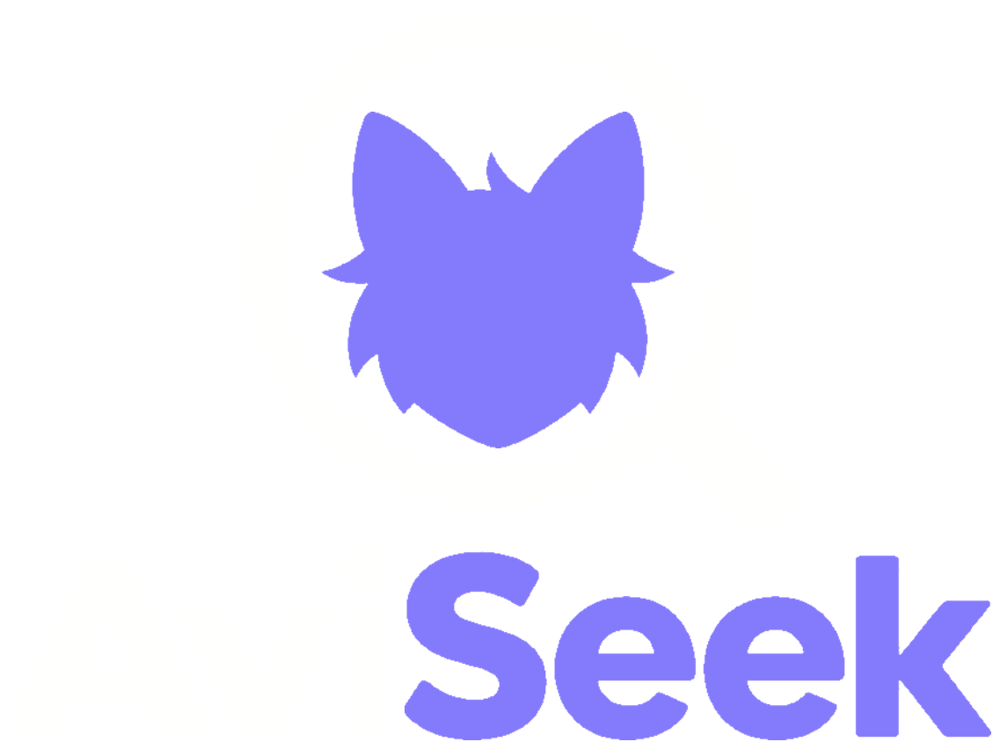
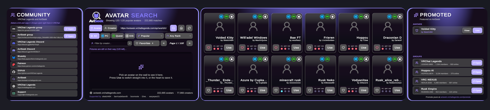
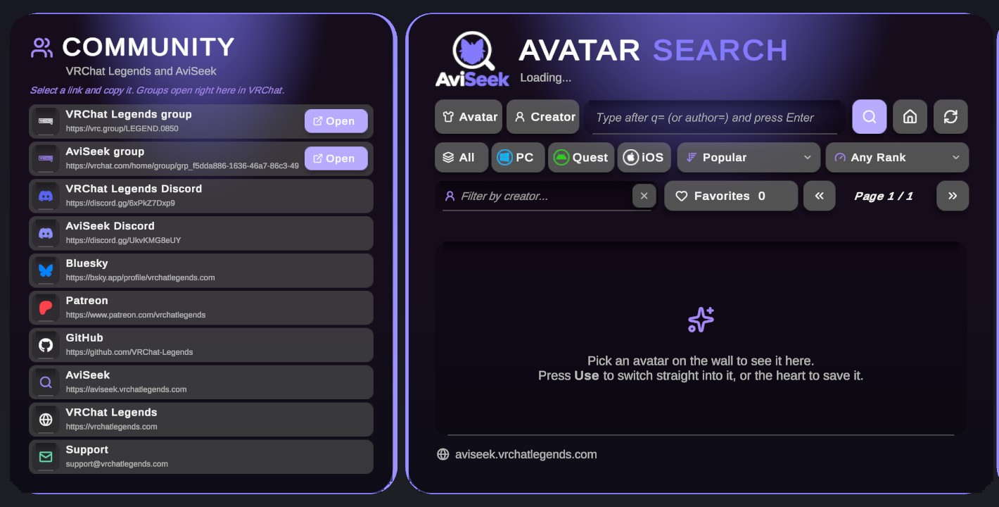
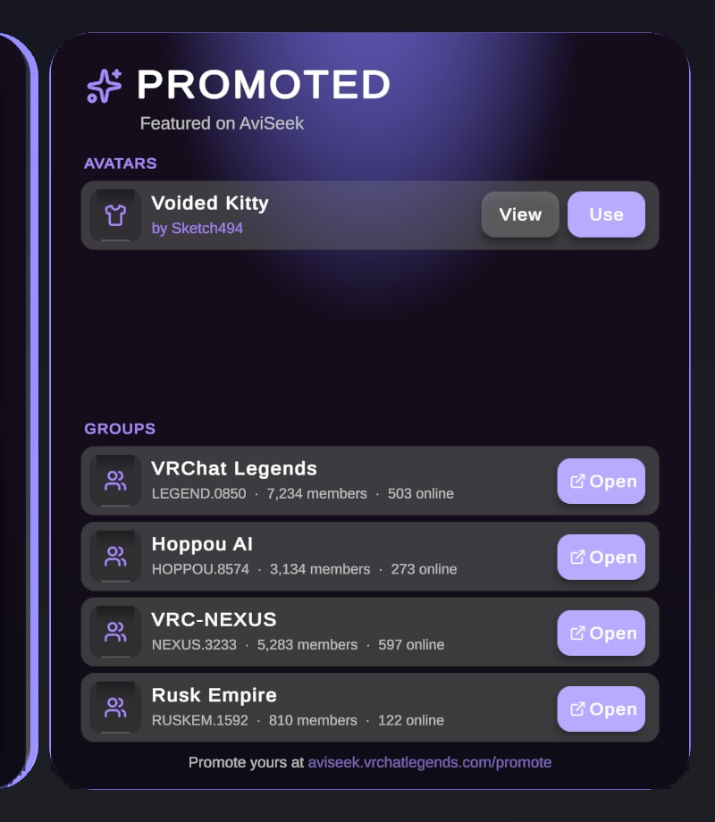
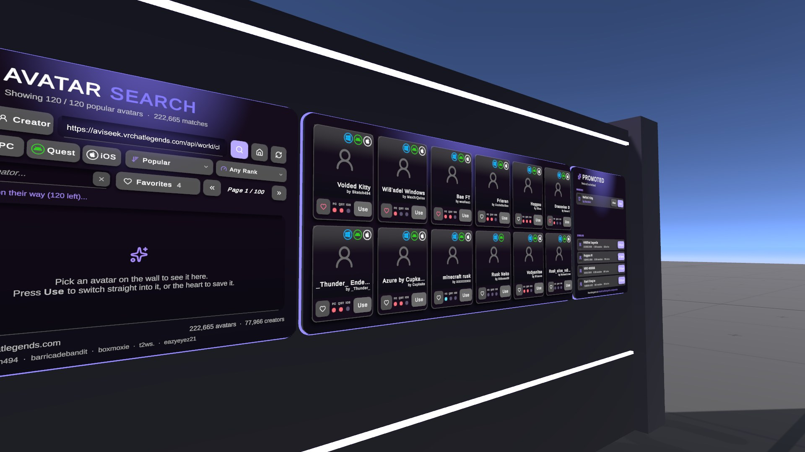

Search avatars or creators
One box searches avatar names or creator names, with PC, Quest and iOS tabs, sorting and performance rank filters.

AviSeek SDKDrop the AviSeek wall into your scene and players can search more than 200,000 public avatars by name or creator, save favorites, browse promoted avatars and groups, and switch avatars in one click.
Nothing happens when you press the button? Open the Creator Companion, go to Settings, then Packages, press Add Repository and paste this address.

One box searches avatar names or creator names, with PC, Quest and iOS tabs, sorting and performance rank filters.
Up to 100 favorites are saved with VRChat persistence and come back on the player's next visit.
Every card has a Use button. Players see each avatar's platforms and ratings before they wear it.
The Promoted panel shows what is featured on AviSeek. Groups open right inside VRChat.
A Socials panel for your Discord, groups, Patreon and more. Edit every link from the inspector.
Change the title, logo and accent colour, and see it on the wall straight away. Switch panels on or off.
Press Add to VRChat Creator Companion above, then confirm in the Creator Companion.
Open your world with Manage Project and add AviSeek World SDK.
In Unity open AviSeek > SDK Panel and press Add AviSeek wall, or drag the prefab into your scene.



{{ package.Name }}
{{ package.Description }}
{{~ if package.Dependencies.size > 0 ~}} Needs
{{~ for dependency in package.Dependencies ~}}
{{ dependency.Name }} {{ dependency.Version }}
{{~ end ~}}
The first release is on its way.
{{~ end ~}}